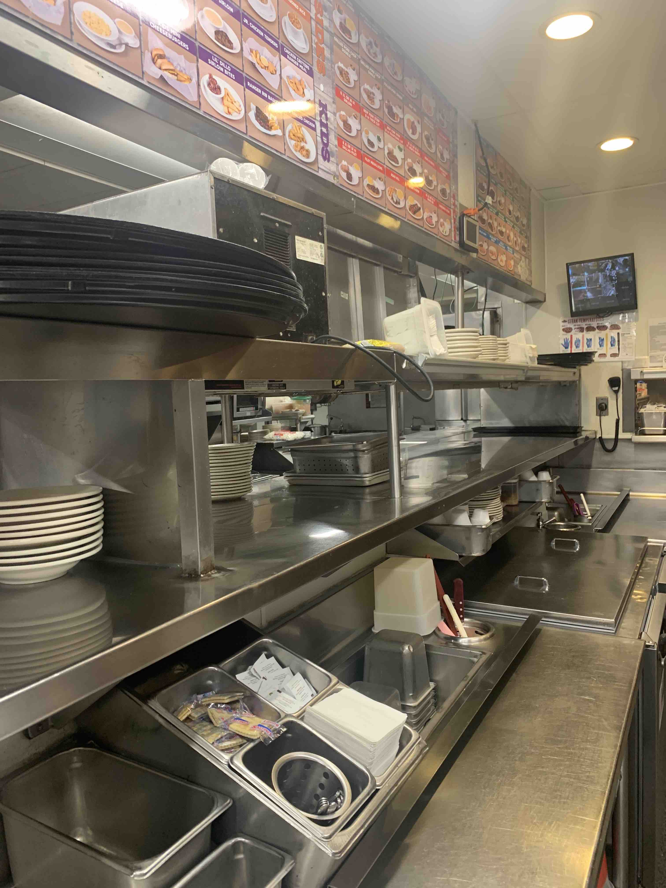
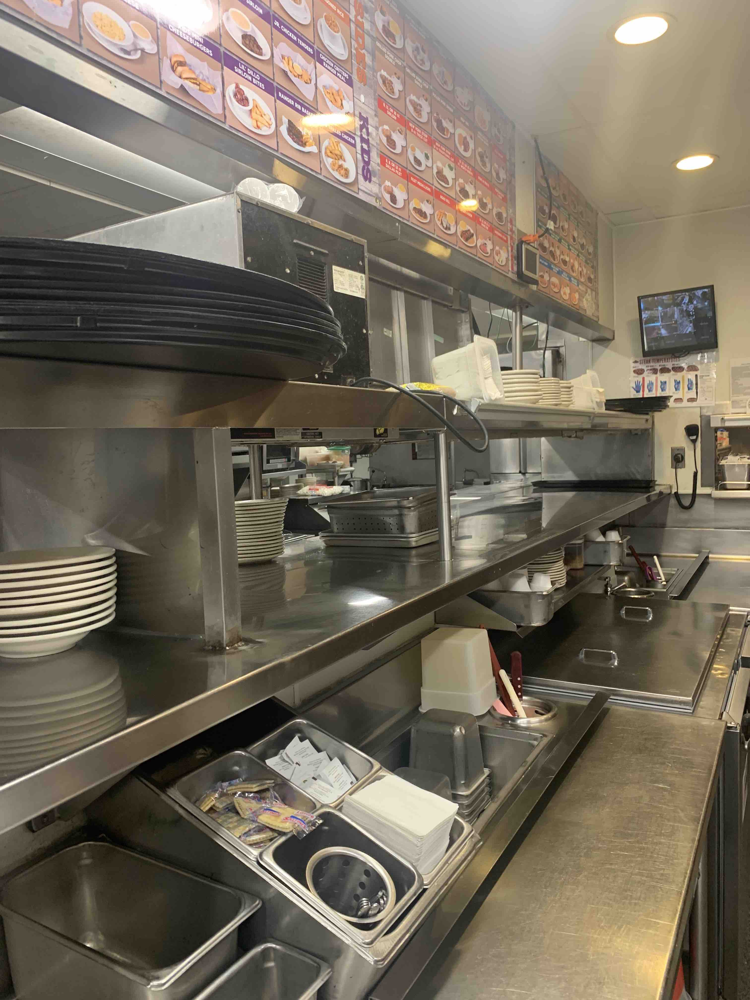
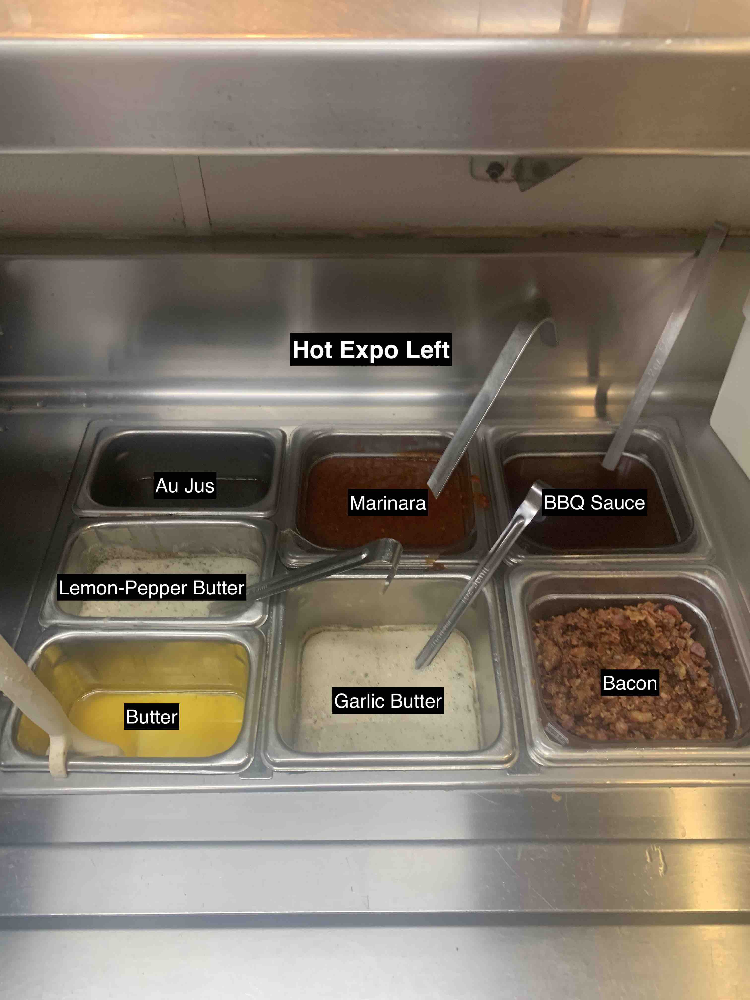
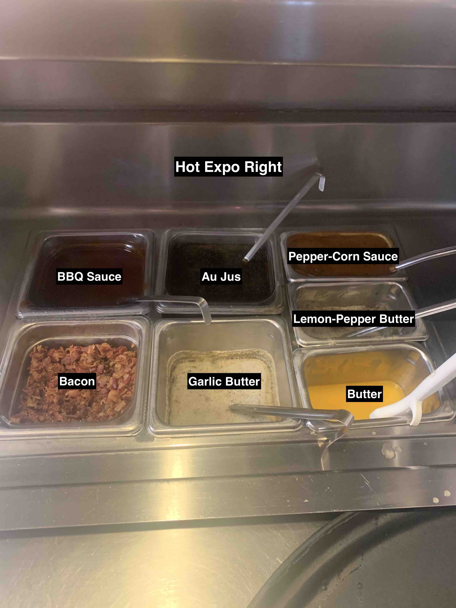
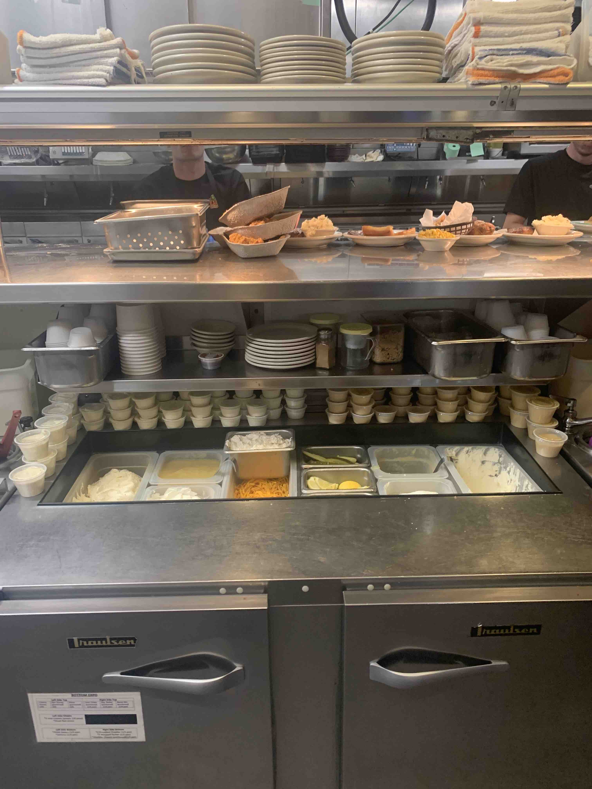

- Turn the knob underneath to block the drain
- Set up all the metal containers except one (so you can fill with water)
- Add a little water to the large deep metal pans
- Fill the station with water until it is touching the deep metal pans.
- Place the final pan into the station
- Turn expo on 7 using the knob
- Using the guide below, put in lemon pepper butter, garlic butter, and brush butter.
- brush butter is a block, so cut it in half and use 1/2 for each expo


- The remaining sauces will be given to you from hot prep through the window.
- Flip over the bus pan under the station
- Grab the red soap bucket, fill it with sanitizer solution, and return it under the station
- Take off the station lid and slide it into its storage space in broil (above the meat display)
- Remove any plastic lids and give them to dish
- Fill pickles, onions, and lemons. (some of these may not be under expo, but they could be in the walk-in
- Ensure that everything in the station is full and that the under part is fully stocked.
- Chop Parsley and put into a 4oz cup. (Use a green cutting board, gloves, and a sharp knife)
- Fill a 4oz cup with grated parmesan
- Place the parmesan/parsley cups into the shakers and snap on the appropriate yellow lids
- The station should look something like this when you are finished:

- Put on nozzles. (clear nozzles first, then black)
- Brew all four teas, making sure the tea nozzles are on and secure.
- Add some ice to a metal "3rd pan" (should be at the station for you!) and put in a container of lemons from the walk-in for each soda station.
- Make sure the small green tongs and a knife are in each of the lemons.
- Make sure there is a trash bin (another metal "3rd pan") at each soda station
- Brew regular and decaff coffee
- Organize glass racks if there are some to put away.
- Portion sugar for tea. (These bags are hanging from the wall before you get into dry storage, sugar is in hot prep, and 6 cups go into each bag)
- You will portion 6 bags of sugar Monday-Thursday, or 10 bags of sugar Friday-Sunday
- Ensure everything is stocked. (ice, cups, employee cups, lids, straws, ...)